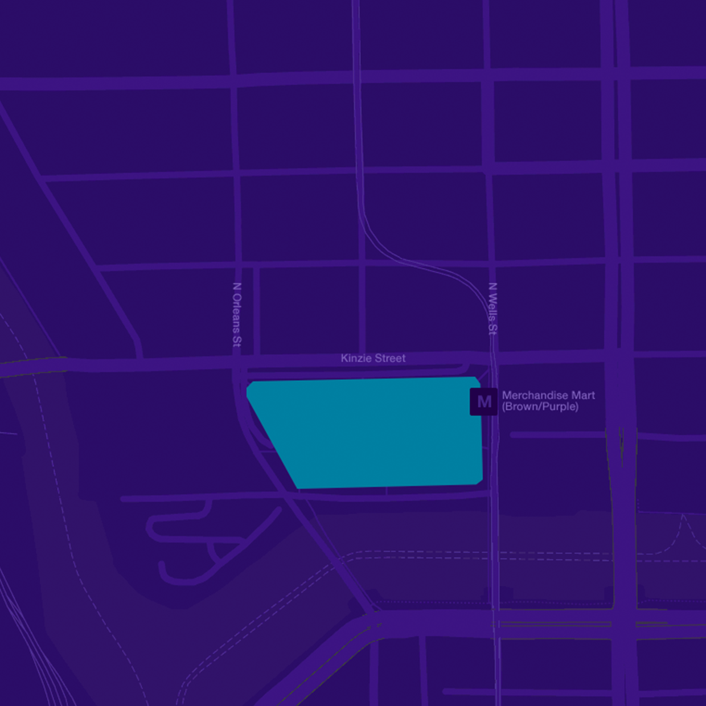

<?php
/*
  Template Name:      Feature Solution Block
  Template Type:      Module
  Description:        Row of two feature solutions (as appear currently on the Understand/Empower pages)
  Last Updated:       08/02/2017
  Since:              1.0.0
*/
?>
  <div class="ar-module big-feature-block">
    <div class="big-feature-block__container">
      <?php
/*
  Template Name:      Round Image
  Template Type:      Component
  Description:        Round background image included for big feature block
  Last Updated:       08/01/2017
  Since:              1.0.0
*/
?>
        <div class="ar-component round-image">
          <div class="round-image__inner">
            <!--  -->
            
          </div>
        </div>

        <div class="row">
          <div class="big-feature-block__col">
            <?php
/*
  Template Name:      Feature Content
  Template Type:      Component
  Description:        Eyebrown, Headline, Copy, CTA Stack
  Last Updated:       08/01/2017
  Since:              1.0.0
*/
?>
              <div class="ar-component feature-content">
                <div class="row">
                  <div class="feature-content__subcol">
                    <h3 class="ar-element type5 eyebrow">Eyebrow</h3>

                    <h2 class="feature-content__header">
                      <!-- Bigger data.<br>Better insights.<br>Smarter decisions.<br><em>Faster.</em> -->
                      Everything you need to hit the ground running
                      <!-- Questions?<br>We have answers. -->
                    </h2>
                  </div>
                </div>
                <div class="row">
                  <div class="feature-content__subcol">
                    <div class="type0">
                      <p>There’s value in knowing what happens next. At Arity, we’re pushing the boundaries of predictive analytics, leveraging Allstate data and modeling expertise to help you evaluate driving risk and make smarter decisions in real time.
                        It’s how we’re revolutionizing transportation—and that’s just the start.</p>
                      <!-- <p>And experience. And ideas. And solutions. We should talk.</p> -->
                    </div>
                    <!-- Optional -->
                    <!-- <p>
        <a href="#" class="ar-element button button--primary">
          <span class="button__label">Learn more</span>
        </a>
      </p> -->
                  </div>
                </div>
              </div>

          </div>
        </div>
    </div>
  </div>